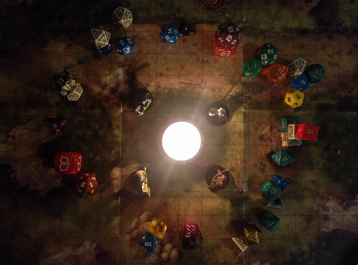
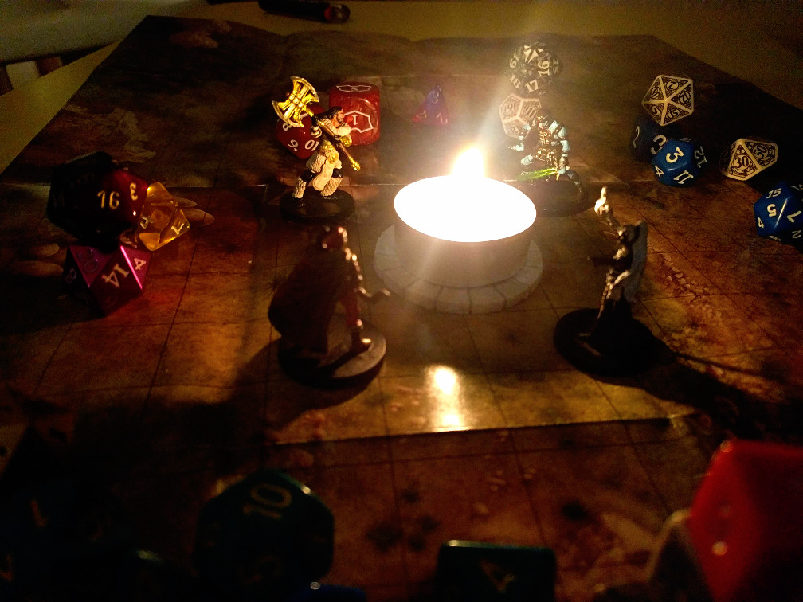
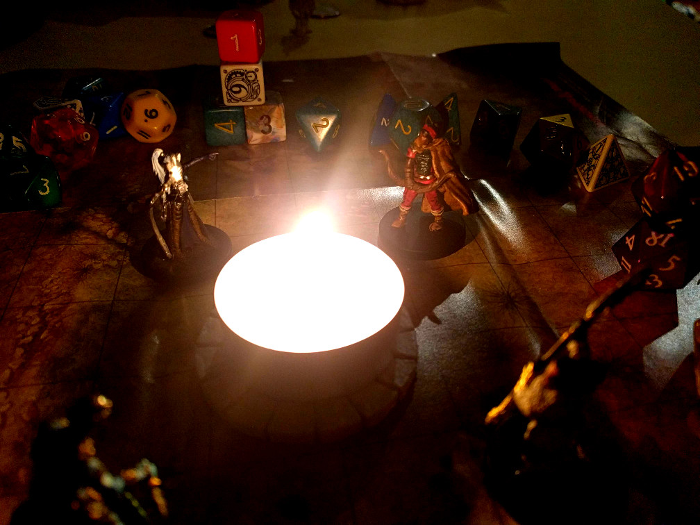
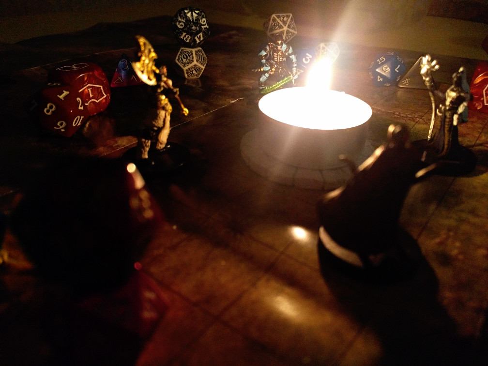
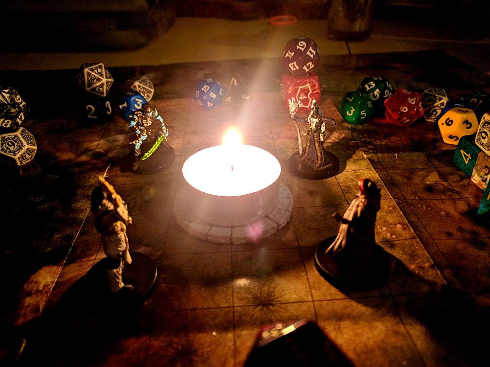

The evening hung on four around a fire
Their cloaks were set against the creeping cold
A chance encampment miles below the spire
A final respite for the heroes bold
And here, said one, a space for stories told
So not unnamed we go assault the keep
And hours yet before the dark ones sleep
My sword is true, said he, as is my mail
But lo, what hope have we to stand apart?
The other three said yea to share a tale
And bade him welcome, when he please, to start
The four against the coming night took heart,
And each would let the forest be their stage --
The knight, the orc, the rogue, and last the mage


Alain of Gaunt am I, began the knight,
Up to this day a bondsman of the Prince.
Indentured to my sister’s marriage right,
The second to the scion ever since.
Of darkened deeds my sir heard only hints.
The secrets kept as knotted in a string
The center of the knot, his Father, King
My prince charged me seek out conspiracy
I found the lands were troubled as I rode
To ruin, monsters, evil sorcery
And back to him with evidence I showed
The prince his father urged uphold the code
The people suffer, and now we must go ride
But no, to our dismay, the King replied
The king had placed the evil wizards here
To ravage all his rival barons’ lands
His royal army’d save them from their fear
But claim them as his own once in his hands
The prince and I were shocked to hear the plans
My sir enjoined me flee, and waits in jail
And now this evil keep I must assail
Alain of Gaunt sat back down on his stone
The orc, she reached to hold his vambrace fast
And said, to any end, but not alone
The others nodded as the evening passed
They looked above across the fortress vast
And wondered what fell deeds awaited there
A new moon rose above the villains’ lair
The orc stood up, her muscles shone by flame
She said, a plague has lain my child low
I tracked the evil wind from whence it came
And here, affect a cure, or die in tow
My name is Daz Belith, and this I know --
My axe will cleave the sorcerors in twain
I live or die, my child will walk again.


Now come, exclaimed the rogue, how dark and grim!
I'm only here to loot this cursed place.
He spun his daggers deftly on his palm.
I’m Kazpacy Denault, but call me ace.
If anything needs done, I’m on the case.
To get inside this tower is a cinch,
But getting out again, well that’s the trick.
The mage stood tall below the closing trees
A bony figure, genderless and wan
Their face was marked with some arcane disease
Their cloak hung loose and wizard hood was drawn
This path is cloudened that we tread upon
I know not what the future holds in store.
But I, Seras the Red, will join us four.
Seras then held their staff up to the sky
And incantated low a magic spell
Around the four they let the aura lie
And drew each others strength as from a well.
They felt the calling ring out as a bell.
They all against the sorcerors would rage --
The knight, the orc, the rogue, and last the mage
